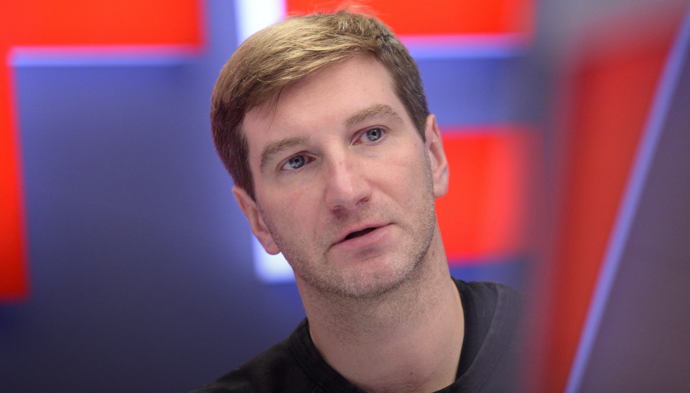

Бывший редактор RT. Призыв к насилию. Восстановлен. Ушёл.

История Красовского — это история о том, что в российских государственных медиа не существует черты, за которую нельзя зайти и остаться безнаказанным. В октябре 2022 года он призвал топить и сжигать украинских детей в прямом эфире. Его приостановили. Потом тихо восстановили.
Начинал карьеру в российских медиа в 2000-е годы. Работал на различных телеканалах и в печатных изданиях. В 2012 году был уволен с Первого канала после того, как публично объявил себя геем — в России, где такое заявление ломало карьеры. Это сделало его нетипичной фигурой для государственного медиапространства.
Перешёл на RT, где постепенно трансформировался из журналиста с либеральным прошлым в жёсткого провластного комментатора. Это типичный путь для части российских медийщиков после 2014 года: публичная смена позиции как условие профессионального выживания или карьерного роста.
22 октября 2022 года в эфире Solovyov Live, обсуждая украинских детей, которые «верят в сказки» о самостоятельной Украине, Красовский произнёс слова о том, что их нужно топить и сжигать. Скандал мгновенно вышел за пределы России. Маргарита Симоньян написала в Telegram: «Я приостанавливаю работу Красовского в RT». Формулировка «приостанавливаю» вместо «увольняю» оказалась значимой.
Без официального объявления, без извинений перед аудиторией, без какого-либо публичного разбора произошедшего Красовский был восстановлен в работе на RT. Симоньян впоследствии объясняла, что он «раскаялся» в частном порядке. Это восстановление красноречивее любого заявления: система показала, что за призыв к убийству детей в ней не увольняют.
Красовский покинул RT и запустил собственный YouTube-канал и Telegram. Выход за рамки государственного медиа не означал смягчения риторики — скорее её радикализацию без институциональных фильтров. ЕС сохраняет персональные санкции. Факт Внутри России скандал с призывом к убийству детей не имел никаких правовых последствий.
История Красовского стала международным символом того, как работает система вседозволенности в российских государственных медиа. Интерпр. Граница дозволенного — не этическая, а политическая: можно говорить что угодно о «враге», нельзя критиковать «своих». Его случай цитируют в докладах ООН и Европарламента как пример системной безнаказанности пропагандистов.
«Таких детей нужно топить прямо в реке с их игрушками... Или сжигать их в горящих избах.»
«Я приостанавливаю работу Красовского в RT. То, что он сказал — отвратительно.»
«Украина — это не страна. Это территория, которую Запад использует против России. Мы не воюем с украинцами — мы воюем с натовским проектом.»
«Европейские санкции — это орден. Значит, я делаю что-то правильно.»
Призыв убивать детей — не оговорка и не эмоциональный срыв. Это логическое следствие многолетней дегуманизирующей риторики, в которой украинцы описываются как «нацисты», «марионетки» и «нелюди». Красовский просто сказал вслух то, что имплицитно содержится в десятках часов государственного эфира.
Российский закон о «пропаганде жестокости» существует. Он применяется против антивоенных художников, музыкантов и журналистов. Против Красовского — нет. Закон — инструмент политики, а не права.
Тихое возвращение Красовского отправляет чёткий сигнал всей системе: говорить о насилии над украинцами — безопасно. Симоньян создала видимость реакции для международной аудитории, сохранив сотрудника для внутренней.
Красовский, открыто объявивший о своей гомосексуальности в 2012-м и потерявший за это работу, к 2022-му стал одним из самых агрессивных голосов системы, которая его отвергала. Это не аномалия — это механизм: система ломает, затем использует сломанных.
Все утверждения в данном досье основаны на открытых публичных источниках. Факты, отмеченные Факт, имеют прямые первичные источники. Отмеченные Интерпр. — авторская интерпретация задокументированных событий.